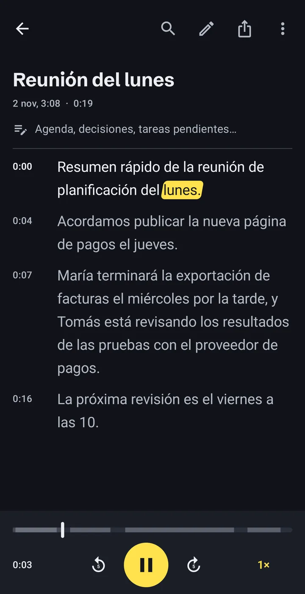
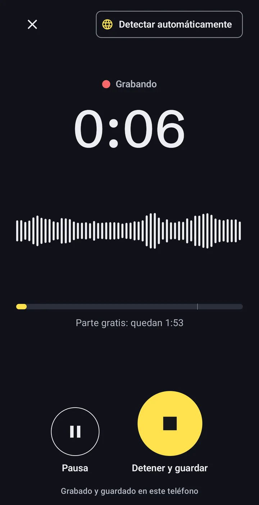
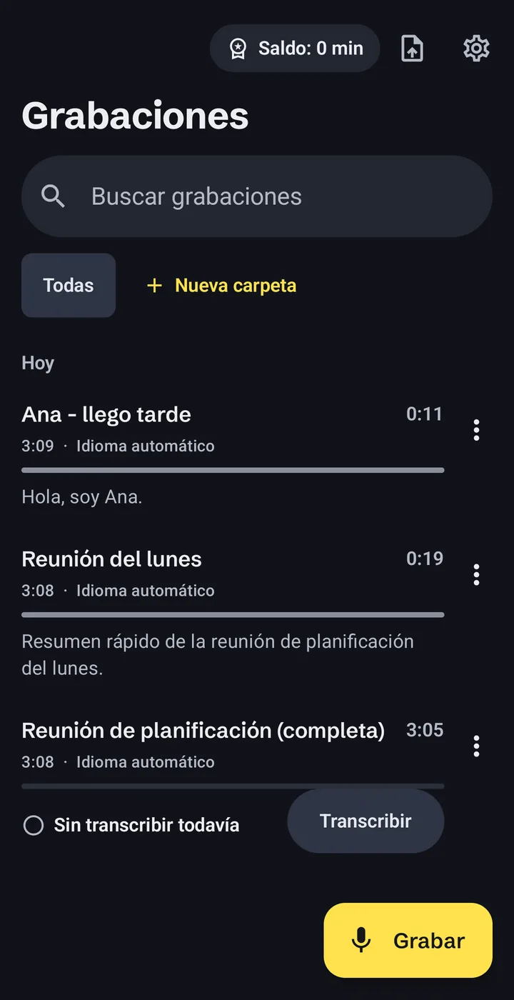
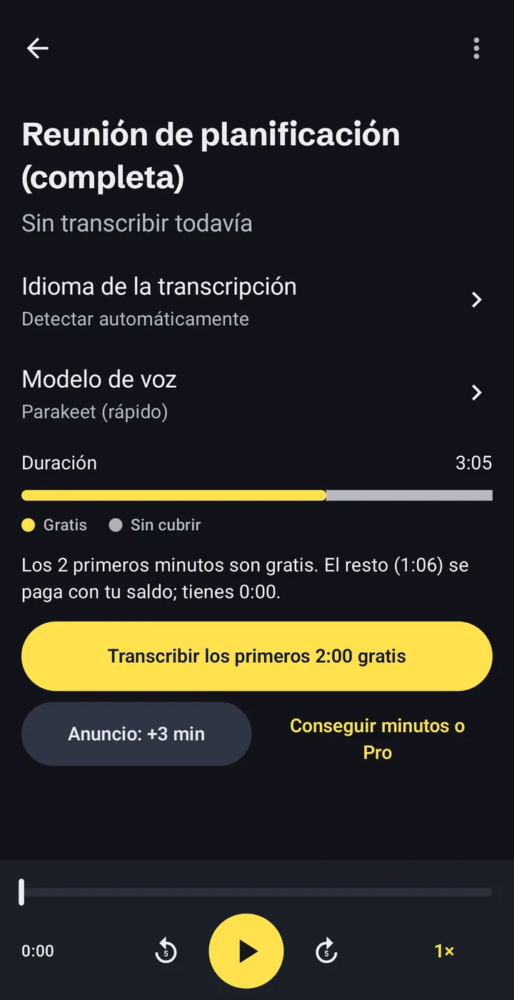

Audio a texto en tu móvil, sin subir nada
Offline Audio Transcriber pasa a texto notas de voz, clases, entrevistas y cualquier MP3 o vídeo, en tu propio móvil Android. Sin cuenta, sin subir nada y sin internet una vez que el modelo de voz está en el móvil.
- Cuenta
- No hace falta
- Modelo de voz
- 671 MB, se descarga una vez
- Gratis
- 2 min de cada grabación

Cómo funciona la transcripción sin conexión
Tres pasos, todos en el móvil. Solo se descarga el modelo de voz, una vez.
-
Graba o abre un archivo que ya tengas
Usa la grabadora integrada o importa archivos de audio y vídeo, también notas de voz guardadas desde apps de mensajería.
- MP3
- M4A
- WAV
- OGG
- MP4
- y otros archivos de audio y vídeo

-
El móvil hace la transcripción
El modelo de voz funciona en el procesador del móvil, así que el audio no sale de él. Los trabajos largos siguen en segundo plano, con el progreso en una notificación.
Grabación de una hora60:00Tiempo de transcripción~8:00Nuestra propia prueba en un Samsung Galaxy S23 Ultra. Los móviles más antiguos o más baratos son más lentos. -
Lee, corrige y exporta
La transcripción tiene marcas de tiempo y sigue el audio mientras suena. Toca una palabra para saltar a ese momento, corrige errores, busca en el texto y ordena las grabaciones en carpetas.
- TXT
- SRT
- VTT
- Copiar
- Compartir

Qué se queda en el móvil y las tres veces que se conecta
No hay cuenta ni servidor nuestro de por medio. Cada punto de abajo está también en la política de privacidad.
Se queda en el móvil
- Tus grabaciones y archivos importados
- Las transcripciones y tus correcciones
- Notas, carpetas y búsqueda
Sale a internet, y para qué
- Modelo
Descargar el modelo de voz, una vez.Desde huggingface.co y github.com.
- Anuncios
Mostrar anuncios, incluido el opcional que añade 3 minutos.Google AdMob. En el EEE, Reino Unido y Suiza decides en el formulario de consentimiento de Google.
- Compras
Comprar paquetes de minutos o Pro.Google Play. Nunca vemos tus datos de pago.
Sin analítica, sin informes de fallos y sin vender datos. Los detalles, en la política de privacidad.
Voz a texto en 24 idiomas europeos
El modelo principal, NVIDIA Parakeet TDT 0.6B v3, entiende estos idiomas:
- alemán
- búlgaro
- checo
- croata
- danés
- eslovaco
- esloveno
- español
- estonio
- finés
- francés
- griego
- húngaro
- inglés
- italiano
- letón
- lituano
- maltés
- neerlandés
- polaco
- portugués
- rumano
- sueco
- ucraniano
Un segundo modelo opcional añade más idiomas. También funciona en el móvil y es más lento.
Lo que cuesta, antes de empezar
Instalarla es gratis. Solo pagas los minutos que pasan de la parte gratuita, y antes de transcribir ves lo que necesita cada grabación.
0:00–2:00Gratis: los 2 primeros minutos de cada grabación.
2:00–10:00Tus minutos: de anuncios cortos o de paquetes.
Con Pro, la grabación entera está cubierta, dure lo que dure.
- Parte gratuita
- Los 2 primeros minutos de cada grabación. Sin ver anuncios.
- Un anuncio corto
- Cada anuncio visto suma 3 minutos. Si no carga, nada se bloquea.
- Paquetes de minutos
- 60, 180 o 600 minutos. No caducan nunca.
- Pro
- Minutos ilimitados. Mensual, anual o pago único.
Google Play muestra los precios en tu moneda antes de confirmar. Las suscripciones se renuevan hasta que las canceles en Google Play. Si una grabación necesita más minutos de los que tienes, la app transcribe la parte gratuita y te dice exactamente cuántos minutos faltan.

Lo primero que suele preguntarse
¿Se suben mis grabaciones a algún sitio?
No. Grabaciones, transcripciones y notas se guardan en el almacenamiento privado de la app en tu móvil. La app solo se conecta para descargar el modelo de voz, mostrar anuncios y gestionar compras en Google Play.
¿Funciona sin internet?
Sí, una vez descargado el modelo de voz. La transcripción no necesita conexión. Ver un anuncio para sumar minutos y comprar sí la necesitan.
¿Cuánto tarda la transcripción?
En un Samsung Galaxy S23 Ultra, una grabación de una hora tardó unos 8 minutos en nuestra prueba. Los móviles más antiguos o baratos son más lentos. Puedes salir de la app: el trabajo sigue en segundo plano.
¿Qué precisión tiene?
Depende del audio: la calidad del sonido, el acento y el ruido de fondo influyen. No publicamos cifras de precisión. Revisa las transcripciones importantes antes de fiarte de ellas; puedes corregir cualquier palabra en la app mientras escuchas.
¿Qué es gratis y qué se paga?
Los 2 primeros minutos de cada grabación son gratis. Para más, mira un anuncio corto (+3 minutos), compra un paquete de minutos que no caduca o hazte Pro para tener minutos ilimitados.
¿Cuánto ocupa la descarga?
El modelo de voz se descarga una sola vez y ocupa 671 MB. La app muestra el tamaño antes de empezar. Si tienes pocos datos móviles, usa Wi-Fi.
¿Cómo borro mis datos?
Borra las grabaciones en la app, o desinstálala para eliminar todo lo que guardó. Los modelos de voz se borran en Ajustes.
Pruébala con tu próxima grabación
Sin crear cuenta. Los 2 primeros minutos de cada grabación son gratis.